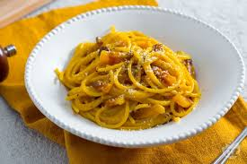

A classic Roman pasta dish made with eggs, cheese, pancetta, and pepper. Quick, creamy, and comforting.
Ingredients
- 200g spaghetti
- 2 eggs
- 100g pancetta
- 50g grated parmesan
- Freshly ground black pepper
Steps
- Boil the pasta in salted water until al dente.
- Fry the pancetta until golden and crispy.
- Mix eggs and cheese in a bowl.
- Drain pasta and quickly mix with egg-cheese mixture and pancetta.
- Serve with extra parmesan and black pepper.
Comments